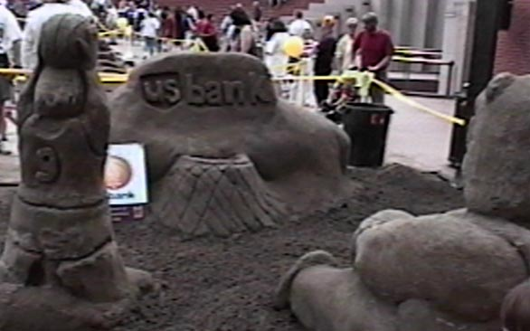
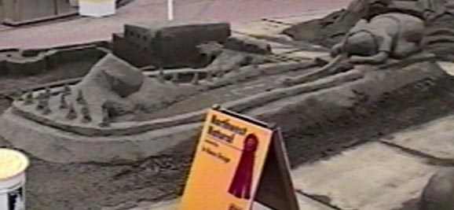

Being a kid thing, large animals seemed pretty popular
Look a bunny on his belly! Oooooo...
This was a very nice looking lion resting on a book. Turned out pretty sharp.
Um. A kid. In a thing. With a fish.
In fairness, on Saturday, I heard that at least one of the scultures basically collapsed,
causing the team to lose their main shape for carving. This could be that one.
I wish I had taken a better shot of this one. It was a mouse, surfing the Web. A bit geeky (mouse ...
surfing ... Web...), but it looked very good.
The Hanna Andersson entry. I believe this won best design. It was certainly the best design within
the theme of the event
This one was pretty sharp looking

Some roundy shaped people things and a blob with a hoop. There you go.
My daughter like this one. Elmo and Oscar the Grouch. What you can't see very well in this
shot is the mermaid plastered up against the can on the right. Don't know what she's
doing there unless Oscar has a date later...

This is a nice miniature golf hole. The trees use a very nice dribbled sand technique.